Lecture 8 Linear models
Learn how to perform linear regression, how to make sure that the assumptions of the model are not violated, and how to interpret the results.
Note that we need a new library:
8.1 Regression toward the mean
Francis Galton (Darwin’s half-cousin) was a biologist interested in evolution, and one of the main proponents of eugenics (he coined the term himself). To advance his research program, he set out to measure several features in human populations, and started trying to explain the variation he observed, incidentally becoming one of the founding fathers of modern statistics.
In his “Regression towards mediocrity in hereditary stature” he showed an interesting pattern: children of tall parents tended to be shorter than their parents, while children of short parents tended to be taller than their parents. He called this phenomoenon “regression toward mediocrity” (now called regression toward [to] the mean).
We’re going to explore this phenomenon using Karl Pearson’s (another founding father of statistics) data from 1903, recording the height of fathers and sons:
heights <- read_tsv("http://www.randomservices.org/random/data/Pearson.txt")
pl <- ggplot(data = heights) + aes(x = Father, y = Son) + geom_point() + coord_equal()
pl
Let’s add the 1:1 line for comparison:
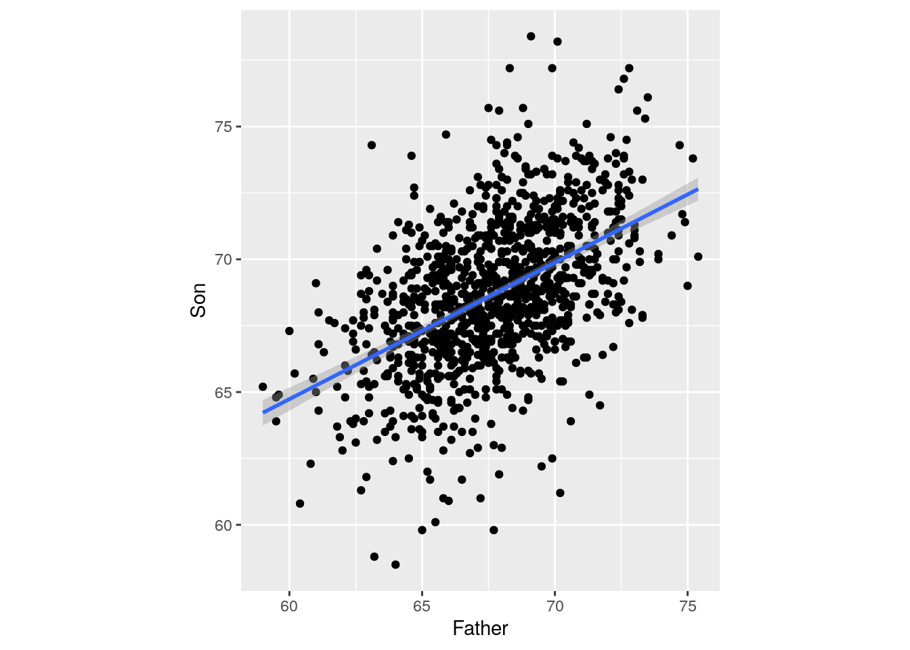
You can see that the sons tend to be taller than their fathers. Let’s see of how much:
## [1] 67.68683## [1] 68.68423## [1] 0.9974026So let’s add a line with an intercept of 1:
You can see that the line does not divide the cloud of points evenly: even though tall fathers tend to produce tall sons, and short fathers short sons, the sons of short fathers tend to be taller than their fathers (for example, look at the sons of fathers less than 60 inches tall), while the sons of tall fathers tend to be shorter than their fathers (for example, the sons of fathers taller than 75 inches).
This phenomenon is called “regression toward the mean”: when you take two measurement on the same sample (or related samples, as here), if a variable is extreme on its first measurement, it will tend to be closer to the average on its second measurement; if it is extreme on its second measurement, it will tend to have been closer to the average on its first.
Regression to the mean: dangers of interpretation
- A city sees an unusual growth of crime in a given neighborhood, and they decide to patrol the neighborhood more heavily. The next year, crime rates are close to normal. Was this due to heavy presence of police?
- A teacher sees that scolding students who’ve had a very low score in a test makes them perform better in the next test. (But would praising those with unusually high scores lead to slacking off in the next test?)
- A huge problem in science: effect sizes tend to decrease through time. Problem of selective reporting?
This phenomemon gave the name to one of the simplest statistical models: the linear regression.
8.2 Finding the best fitting line: Linear Regression
How can we explain the relationship between the height of the faters and those of their sons? One of the simplest models we can use is called a “Linear Model”. Basically, we want to express the height of the son as a function of the height of the father:
\[ y_i = \beta_0 + \beta_1 x_i + \epsilon_i \]
where \(y_i\) is the height of the son (response variable), \(x_i\) is the height of the father (explanatory variable), \(\beta_0\) and \(\beta_1\) are two numbers (intercept and slope of the line) that do not vary within the population (these are the parameters we want to fit). Finally, the term \(\epsilon_i\) measures the “error” we are making for the \(i^{th}\) son. For simplicity, we assume the \(\epsilon_i \overset{\text{iid}}{\sim} \mathcal N(0, \sigma^2)\) (and \(\sigma\) is therefore another parameter we want to fit).
When we have multiple explanatory variables (for example, if we had recorded also the height of the mother, whether the son was born at full term or premature, the average caloric intake for the family, etc.), we speak of Multiple Linear Regression:
\[ y_i = \beta_0 + \sum_{k=1}^n \beta_k x_{ik} + \epsilon_i \]
8.2.1 Solving a linear model — some linear algebra
In this section, we’re going to look at the mechanics of linear regression. Suppose that for simplicity we have a single explanatory variable, then we can write the linear model in compact form as:
\[ \mathbf{Y} = \mathbf{X} \mathbf{\beta} + \mathbf{\epsilon} \]
where:
\[ \mathbf{Y} = \begin{pmatrix} y_1\\ y_2\\ \vdots \\ y_n \end{pmatrix} \;\;\; \mathbf{X} = \begin{pmatrix} 1 & x_1\\ 1 & x_2\\ \vdots & \vdots \\ 1 & x_n \end{pmatrix} \;\;\; \mathbf{\beta} = \begin{pmatrix} \beta_0 \\ \beta_1\end{pmatrix} \;\;\; \mathbf{\epsilon} = \begin{pmatrix} \epsilon_1 \\ \epsilon_2 \\ \vdots \\ \epsilon_n \end{pmatrix} \]
Solving the linear regression means finding the best-fitting \(\beta_0\), \(\beta_1\) and \(\sigma\) (controlling the spread of the distribution of the \(\epsilon_i\)). Our goal is to find the values of \(\beta\) that minimize \(\sigma\) (meaning that the points fall closer to the line). Rearranging:
\[ \sum_i \epsilon_i^2 = \sum_i (y_i - \beta_0 - \beta_1 x_i)^2 = \Vert \mathbf{Y} - \mathbf{X} \mathbf{\beta} \Vert \]
As such, we want to find the vector \(\beta\) that minimizes the norm \(\Vert \mathbf{Y} - \mathbf{X} \mathbf{\beta} \Vert\). One can prove that this is accomplished using:
\[ \hat{\mathbf{\beta}} = \left( \mathbf{X}^T \mathbf{X} \right)^{-1} \mathbf{X}^T \mathbf{Y} \]
Where the matrix \(\left( \mathbf{X}^T \mathbf{X} \right)^{-1} \mathbf{X}^T\) is known as the (left) Moore-Penrose pseudo-inverse of \(\mathbf{X}\). Let’s try to do this in R (the “hard” way):
X <- cbind(1, heights$Father)
Y <- cbind(heights$Son)
best_beta <- solve(t(X) %*% X) %*% t(X) %*% Y
best_beta## [,1]
## [1,] 33.8928005
## [2,] 0.5140059We find that the best fitting line has an intercept of about 34 inches, and a slope of 0.51. Of course, R can do this calculation for you with just one command:
##
## Call:
## lm(formula = Son ~ Father, data = heights)
##
## Coefficients:
## (Intercept) Father
## 33.893 0.514But it feels good to know that this is not black magic! In fact, plotting it on top of the data does not even require computing the coefficients:
8.2.2 Minimizing the sum of squares
What we just did is called “ordinary least-squares”: we are trying to minimize the distance from the data points to their projection on the best-fitting line. We can compute the “predicted” heights as:
\[ \hat{\mathbf{Y}} = \mathbf{X}\hat{\mathbf{\beta}} \]
Then, we’re minimizing \(\Vert \mathbf{Y} - \hat{\mathbf{Y}}\Vert\). We call \(\hat{\mathbf{\epsilon}} = \mathbf{Y} - \hat{\mathbf{Y}}\) the vector of residuals. From this, we can estimate the final parameter, \(\sigma\):
\[ \sigma = \sqrt{\frac{\sum_i \hat{\epsilon_i}^2}{n - p}} \]
where \(n\) is the number of data points, and \(p\) is the number of parameters in \(\mathbf{\beta}\) (2 in this case); this measures the number of degrees of freedom. Let’s try to compute it:
## [1] 1076## [1] 2.438134In R, you will find this reported as the Residual standard error when you call summary on your model:
##
## Call:
## lm(formula = Son ~ Father, data = heights)
##
## Residuals:
## Min 1Q Median 3Q Max
## -8.8910 -1.5361 -0.0092 1.6359 8.9894
##
## Coefficients:
## Estimate Std. Error t value Pr(>|t|)
## (Intercept) 33.89280 1.83289 18.49 <2e-16 ***
## Father 0.51401 0.02706 19.00 <2e-16 ***
## ---
## Signif. codes: 0 '***' 0.001 '**' 0.01 '*' 0.05 '.' 0.1 ' ' 1
##
## Residual standard error: 2.438 on 1076 degrees of freedom
## Multiple R-squared: 0.2512, Adjusted R-squared: 0.2505
## F-statistic: 360.9 on 1 and 1076 DF, p-value: < 2.2e-16Finally, the coefficient of determination \(R^2\) is computed as:
\[ R^2 = \frac{\sum_i (\hat{y}_i - \bar{y})^2}{\sum_i ({y}_i - \bar{y})^2} \]
where \(\bar{y}\) is the mean of \(y_i\). If the regression has an intercept, then the \(R^2\) can vary between 0 and 1, with values close to 1 indicating a good fit to the data. Again, let’s compute it the hard way and then the easy way:
## [1] 0.251164##
## Call:
## lm(formula = Son ~ Father, data = heights)
##
## Residuals:
## Min 1Q Median 3Q Max
## -8.8910 -1.5361 -0.0092 1.6359 8.9894
##
## Coefficients:
## Estimate Std. Error t value Pr(>|t|)
## (Intercept) 33.89280 1.83289 18.49 <2e-16 ***
## Father 0.51401 0.02706 19.00 <2e-16 ***
## ---
## Signif. codes: 0 '***' 0.001 '**' 0.01 '*' 0.05 '.' 0.1 ' ' 1
##
## Residual standard error: 2.438 on 1076 degrees of freedom
## Multiple R-squared: 0.2512, Adjusted R-squared: 0.2505
## F-statistic: 360.9 on 1 and 1076 DF, p-value: < 2.2e-168.2.3 Assumptions of linear regression
In practice, when we are performing a linear regression, we are making a number of assumptions about the data. Here are the main ones:
- Model structure: we assume that the process generating the data is linear.
- Explanatory variable: we assume that this is measured without errors (!).
- Residuals: we assume that residuals are i.i.d. Normal.
- Strict exogeneity: the residuals should have conditional mean of 0.
\[ \mathbb E[\epsilon_i | x_i] = 0 \]
- No linear dependence: the columns of \(\mathbf{X}\) should be linearly independent.
- Homoscedasticity: the variance of the residuals is independent of \(x_i\).
\[ \mathbb V[\epsilon_i | x_i] = \sigma^2 \]
- Errors are uncorrelated between observations.
\[ \mathbb E[\epsilon_i \epsilon_j | x] = 0 \; \forall j \neq i \]
8.3 Linear regression in action
To perform a slightly more complicated linear regression, we take the data from:
Piwowar HA, Day RS, Fridsma DB (2007) Sharing detailed research data is associated with increased citation rate. PLoS ONE 2(3): e308.
The authors set out to demonstrate that sharing data accompanying papers tends to increase the number of citations received by the paper.
# original url
# https://datadryad.org/stash/dataset/doi:10.5061/dryad.j2c4g
dat <- read_csv("data/Piwowar_2011.csv")
# rename variables for easier handling
dat <- dat %>% rename(IF = `Impact factor of journal`,
NCIT = `Number of Citations in first 24 months after publication`,
SHARE = `Is the microarray data publicly available`) %>%
select(NCIT, IF, SHARE)First, let’s run a model in which the logarithm of the number of citations + 1 is regressed against the “Impact Factor” of the journal (which is a measure of “prestige” based on the average number of citations per paper received):
##
## Call:
## lm(formula = log(NCIT + 1) ~ log(IF + 1), data = dat)
##
## Residuals:
## Min 1Q Median 3Q Max
## -1.65443 -0.44272 -0.00769 0.43414 1.62817
##
## Coefficients:
## Estimate Std. Error t value Pr(>|t|)
## (Intercept) 0.1046 0.2951 0.355 0.724
## log(IF + 1) 1.2920 0.1196 10.802 <2e-16 ***
## ---
## Signif. codes: 0 '***' 0.001 '**' 0.01 '*' 0.05 '.' 0.1 ' ' 1
##
## Residual standard error: 0.6887 on 83 degrees of freedom
## Multiple R-squared: 0.5844, Adjusted R-squared: 0.5794
## F-statistic: 116.7 on 1 and 83 DF, p-value: < 2.2e-16You can see that the higher the impact factor, the higher the number of citations received (unsurprisingly!). Now let’s add another variable, detailing whether publicly available data accompany the paper:
##
## Call:
## lm(formula = log(NCIT + 1) ~ log(IF + 1) + SHARE, data = dat)
##
## Residuals:
## Min 1Q Median 3Q Max
## -1.98741 -0.43768 0.08726 0.41847 1.35634
##
## Coefficients:
## Estimate Std. Error t value Pr(>|t|)
## (Intercept) 0.4839 0.3073 1.575 0.11918
## log(IF + 1) 1.0215 0.1442 7.084 4.4e-10 ***
## SHARE 0.5519 0.1802 3.062 0.00297 **
## ---
## Signif. codes: 0 '***' 0.001 '**' 0.01 '*' 0.05 '.' 0.1 ' ' 1
##
## Residual standard error: 0.6564 on 82 degrees of freedom
## Multiple R-squared: 0.627, Adjusted R-squared: 0.6179
## F-statistic: 68.92 on 2 and 82 DF, p-value: < 2.2e-16We find that sharing data is associated with a larger number of citations.
8.4 A regression gone wild
Even when the fit is good, and assumptions are met, one can still end up with a fantastic blunder. To show this, we are going to repeat a study published in Nature (no less!) by Tatem et al. You can find the study here. Briefly, the Authors gathered data on the 100m sprint at the Olympics from 1900 to 2004, for both men and women. We can do the same:
Then, they fitted a linear regression through the points, for both men and women. So far, so good:
ggplot(data = olympics %>% filter(Year > 1899, Year < 2005)) +
aes(x = Year, y = Result, colour = Gender) +
geom_point() + geom_smooth(method = "lm")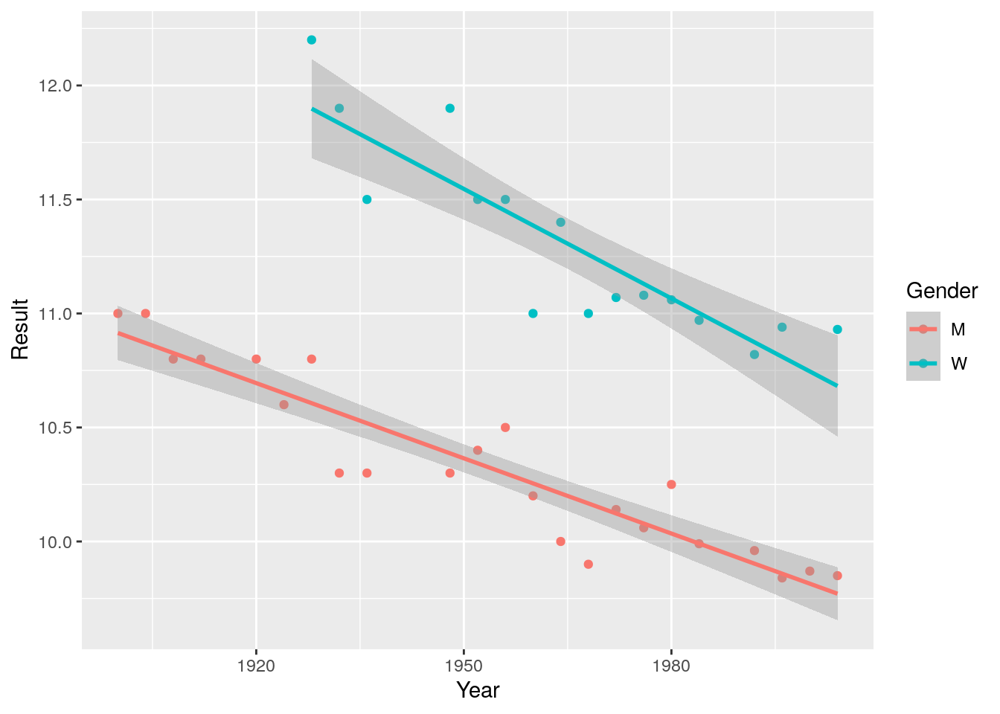
The fit is quite good:
##
## Call:
## lm(formula = Result ~ Year * Gender, data = olympics %>% filter(Year >
## 1899, Year < 2005))
##
## Residuals:
## Min 1Q Median 3Q Max
## -0.38617 -0.05428 -0.00071 0.08239 0.32174
##
## Coefficients:
## Estimate Std. Error t value Pr(>|t|)
## (Intercept) 31.808278 2.179491 14.594 < 2e-16 ***
## Year -0.010997 0.001116 -9.855 1.24e-11 ***
## GenderW 10.952646 4.371678 2.505 0.0170 *
## Year:GenderW -0.005011 0.002228 -2.249 0.0309 *
## ---
## Signif. codes: 0 '***' 0.001 '**' 0.01 '*' 0.05 '.' 0.1 ' ' 1
##
## Residual standard error: 0.1707 on 35 degrees of freedom
## Multiple R-squared: 0.9304, Adjusted R-squared: 0.9244
## F-statistic: 155.9 on 3 and 35 DF, p-value: < 2.2e-16An \(R^2\) of 0.93, the pinnacle of a good linear regression. Now however, comes the problem. The Authors noticed that the times recorded for women are falling faster than those for men, meaning that the gender gap is reducing. Will it ever disappear? Just extend the regression and project forward:
ggplot(data = olympics %>% filter(Year > 1899, Year < 2005)) +
aes(x = Year, y = Result, colour = Gender) +
geom_point() + geom_smooth(method = "lm", fullrange = TRUE, se = FALSE) +
xlim(c(1890, 2200)) + ylim(c(0, 13))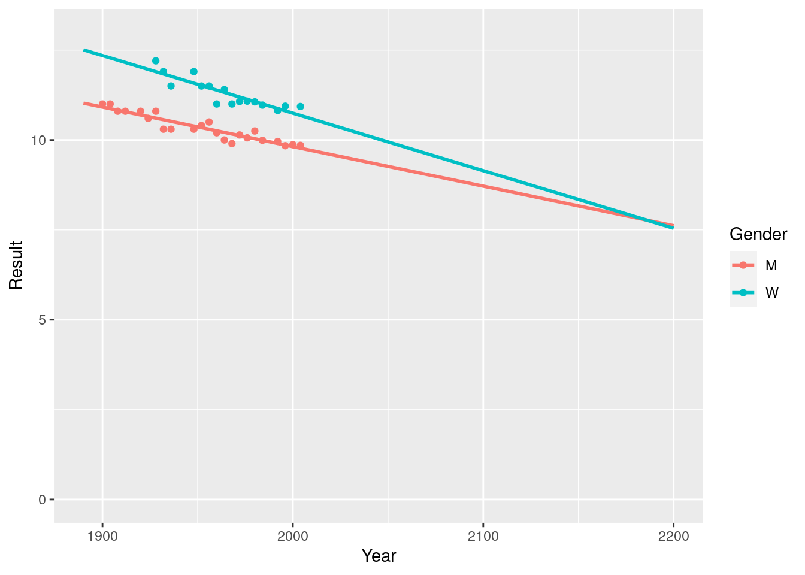
You can see that the lines are touching in sometimes before 2200! Then women will overrun men.
There are a number of things that are wrong with this result. First, by the same logic, computers will soon go faster than the speed of light, the number of people on planet Earth will be in the hundreds of billions, and the price of sequencing will drop so much that we will be paid instead of paying to get our samples sequenced…
Second, if we extend backwards, rather than forward, we would find that Roman women would take more than a minute to run 100m (possibly, because of the uncomfortable tunics and sandals…).
ggplot(data = olympics %>% filter(Year > 1899, Year < 2005)) +
aes(x = Year, y = Result, colour = Gender) +
geom_point() + geom_smooth(method = "lm", fullrange = TRUE, se = FALSE) +
xlim(c(-2000, 2200)) + ylim(c(0, 75))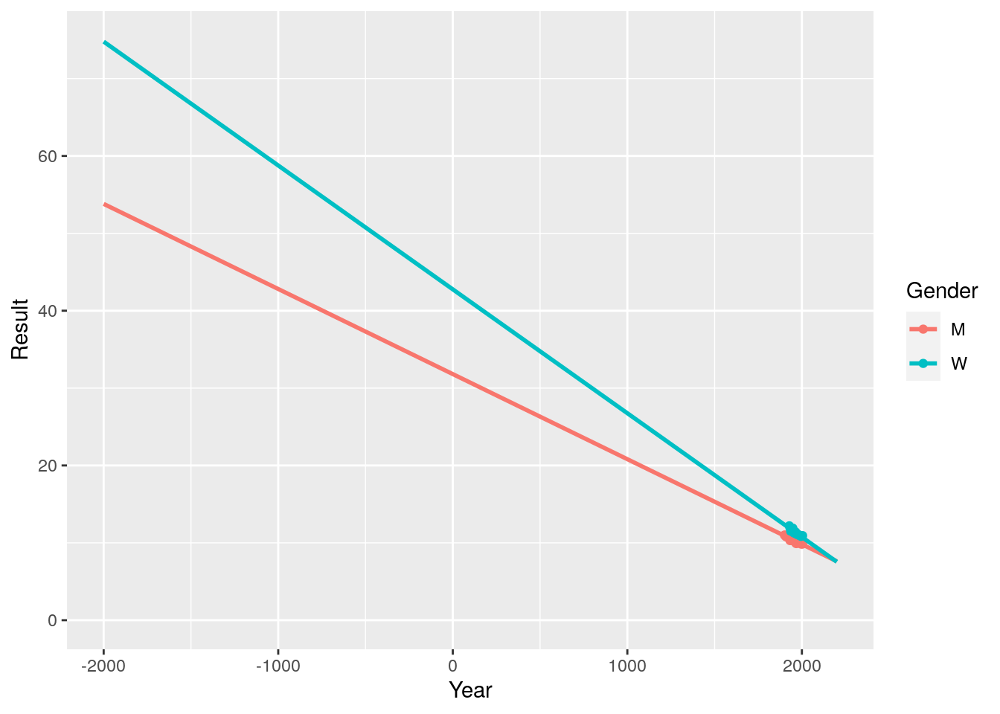
As Neil Bohr allegedly said (but this is disputed), “Prediction is very difficult, especially about the future”. The fact is that any non-linear curve looks quite linear if we are only considering a small range of values on the x-axis. To prove this point, let’s add the data from 2004 to today:
ggplot(data = olympics %>% filter(Year > 1899)) +
aes(x = Year, y = Result, colour = Gender) +
geom_point() + geom_smooth(method = "lm", fullrange = TRUE, se = FALSE) +
xlim(c(1890, 2400)) + ylim(c(0, 13))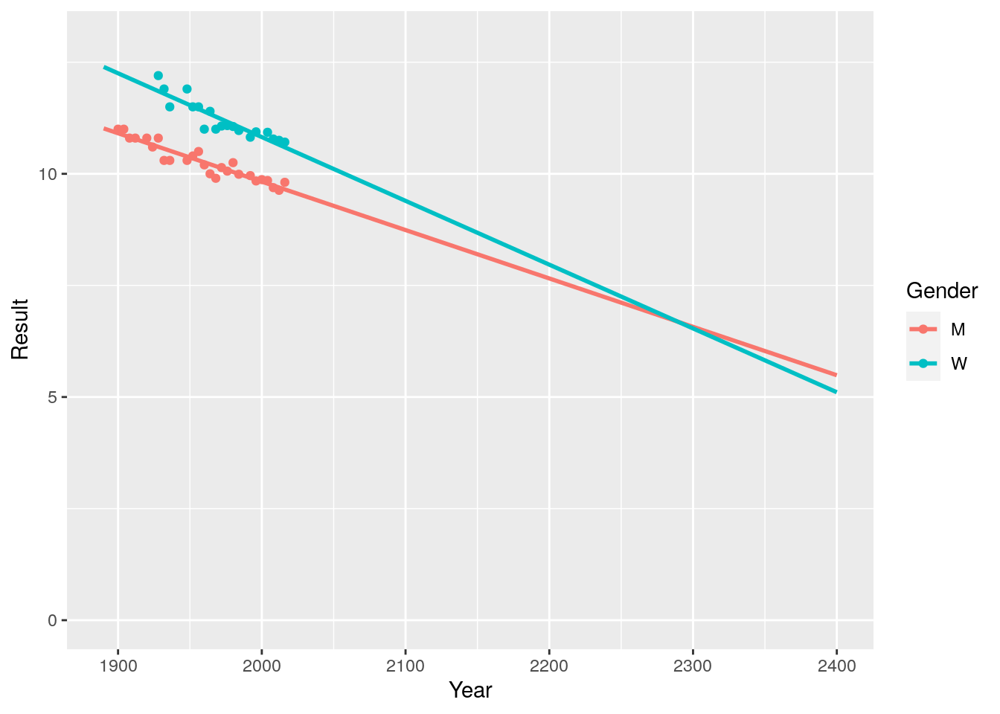
You can see that the process has already slowed down: now it would take an extra century before the “momentous sprint”.
So many things were wrong with this short paper, that Nature was showered with replies. My favorite is from a Cambridge statistician (the Authors were from Oxford, ça va sans dire); it is perfectly short and venomous—a good candidate for the Nobel prize in Literature!
Sir — A. J. Tatem and colleagues calculate that women may outsprint men by the middle of the twenty-second century (Nature 431, 525; 2004). They omit to mention, however, that (according to their analysis) a far more interesting race should occur in about 2636, when times of less than zero seconds will be recorded. In the intervening 600 years, the authors may wish to address the obvious challenges raised for both time-keeping and the teaching of basic statistics. — Kenneth Rice
8.5 More advanced topics
8.5.1 Categorical variables in linear models
In the example above, we have built the model:
\[ \log(\text{NCIT} + 1) = \beta_0 + \beta_1 (\log(\text{IF} + 1))_i + \beta_2 (\text{SHARE})_i + \epsilon_i \]
In this case, the variable SHARE takes values of 1 or 0. As such, when the data were not shared (SHARE = 0) the model reduces to the previous one, in which \(\beta_2\) was absent. The coefficient \(\beta_2\) measures the increase in the log of citation count when data are shared.
The same approach can be taken whenever you have categorical values: R will automatically create dummy variables each encoding whether the ith data point belongs to a particular category. For example, suppose you want to predict the height of a child based on the height of the father, and that you also collected the gender, in three categories: F for female, M for male, U for unknown. Then you could use this information to build the model:
\[ \text{height}_i = \beta_0 + \beta_1 \text{(height of father)}_i + \beta_2 (\text{gender is M})_i + \beta_3 (\text{gender is U})_i + \epsilon_i \]
where the variable gender is M takes value 1 when the gender is M and 0 otherwise, and gender is U takes value 1 when the gender is unknown and 0 otherwise. As such, when the gender is F both variables will be zero, and \(\beta_2\) and \(\beta_3\) measure the increase (or decrease) in height for males and those with unspecified gender, respectively. While R does this for you automatically, understanding what is going on “under the hood” is essential for interpreting the results.
8.5.2 Interactions in linear models
Sometimes we think that our explanatory variables could “interact”. For example, suppose you want to predict the BMI of people. What we have available is the average caloric intake, the height, gender, and whether they are vegetarian, vegan, or omnivores. A simple model could be:
\[ \text{BMI}_i = \beta_0 + \beta_h \text{height}_i + \beta_c \text{calories}_i + \beta_g \text{gender}_i + \epsilon_i \]
We could add the type of diet as a factor:
\[ \text{BMI}_i = \beta_0 + \beta_h \text{height}_i + \beta_c \text{calories}_i + \beta_g \text{gender}_i + \beta_d \text{diet}_i + \epsilon_i \]
However, suppose that we believe the type of diet to affect differentially men and women. Then, we would like to create an “interaction” (e.g., paleo-female, vegan-male):
\[ \text{BMI}_i = \beta_0 + \beta_h \text{height}_i + \beta_c \text{calories}_i + \beta_g \text{gender}_i + \beta_d \text{diet}_i + \beta_{gd} \text{gender:diet}_i + \epsilon_i \]
where the colon signals “interaction”. In R, this would be coded as lm(BMI ~ height + calories + gender * diet). A simpler model is one in which we only account for the gender:diet interaction, but not for the separate effects of gender and diet:
\[ \text{BMI}_i = \beta_0 + \beta_h \text{height}_i + \beta_c \text{calories}_i + \beta_{gd}\text{gender:diet}_i + \epsilon_i \]
which in R can be coded as lm(BMI ~ height + calories + gender:diet). Finally, for some models you believe the intercept should be 0 (note that this makes the \(R^2\) statistics uninterpretable!). In R, just put -1 at the end of the definition of the model (e.g., lm(BMI ~ height + calories + gender:diet - 1)).
8.5.3 Regression diagnostics
Now that we know the mechanics of linear regression, we turn to diagnostics: how can we make sure that the model fits the data “well”? We start by analyzing a data set assembled by Anscombe (The American Statistician, 1973)
The file comprised four data sets. We perform a linear regression using each data set separately:
##
## Call:
## lm(formula = Y ~ X, data = dat %>% filter(Data_set == "Data_1"))
##
## Coefficients:
## (Intercept) X
## 3.0001 0.5001##
## Call:
## lm(formula = Y ~ X, data = dat %>% filter(Data_set == "Data_2"))
##
## Coefficients:
## (Intercept) X
## 3.001 0.500##
## Call:
## lm(formula = Y ~ X, data = dat %>% filter(Data_set == "Data_3"))
##
## Coefficients:
## (Intercept) X
## 3.0025 0.4997##
## Call:
## lm(formula = Y ~ X, data = dat %>% filter(Data_set == "Data_4"))
##
## Coefficients:
## (Intercept) X
## 3.0017 0.4999As you can see, each data set is best fit by the same line, with intercept 3 and slope \(\frac{1}{2}\). Plotting the data, however, shows that the situation is more complicated:
ggplot(data = dat) + aes(x = X, y = Y, colour = Data_set) +
geom_point() + geom_smooth(method = "lm", se = FALSE) +
facet_wrap(~Data_set)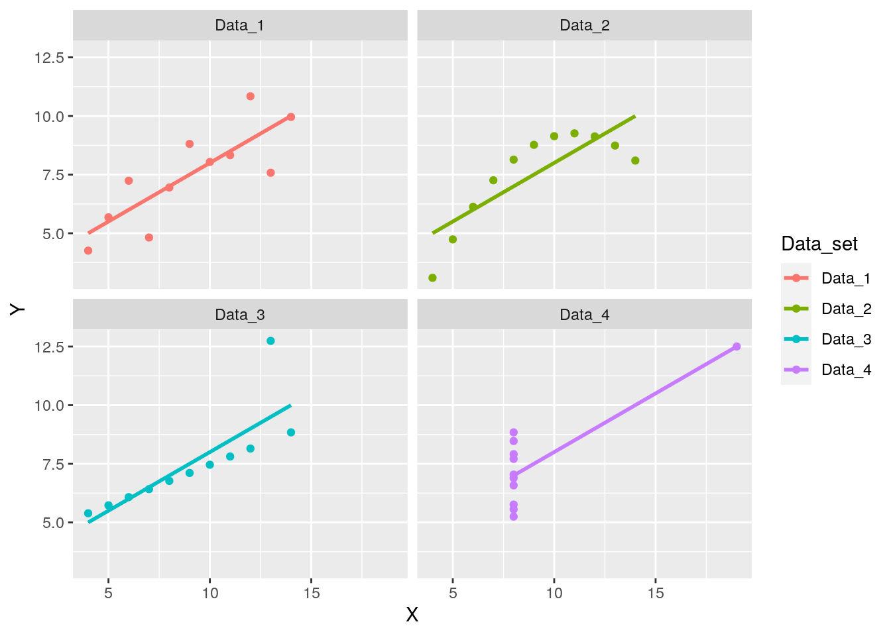
Data_1 is fitted quite well; Data_2 shows a marked nonlinearity; all points but one in Data_3 are on the same line, but a single outlier shifts the line considerably; finally, in Data_4 a single point is responsible for the fitting line: all other values of X are exactly the same. Inspecting the graphs, we would conclude that we can trust our model only in the first case. When you are performing a multiple regression, however, it is hard to see whether we’re in case 1, or one of the other cases. R provides a number of diagnostic tools which can help you decide whether the fit to the data is good.
8.5.4 Plotting the residuals
The first thing you want to do is to plot the residuals as a function of the fitted values. This plot should make it apparent whether the data was linear or not. The package lindia (linear regression diagnostics) makes it easy to produce this type of plot using ggplot2:
gg_resfitted(lm(Y ~ X, data = dat %>% filter(Data_set == "Data_1"))) + geom_smooth(method = "loess")
What you are looking for is an approximately flat line, meaning that the residuals are approximately normally distributed with mean zero for each fitted value. This is not the case in the other data sets:
gg_resfitted(lm(Y ~ X, data = dat %>%
filter(Data_set == "Data_2"))) +
geom_smooth(method = "loess")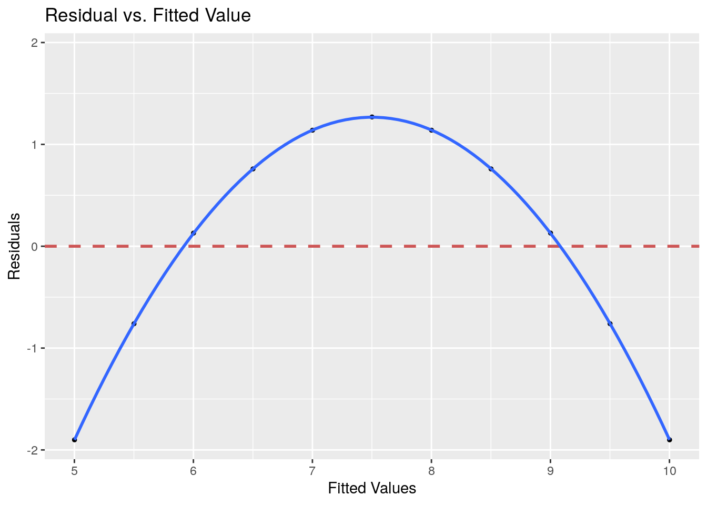
gg_resfitted(lm(Y ~ X, data = dat %>%
filter(Data_set == "Data_3"))) +
geom_smooth(method = "loess")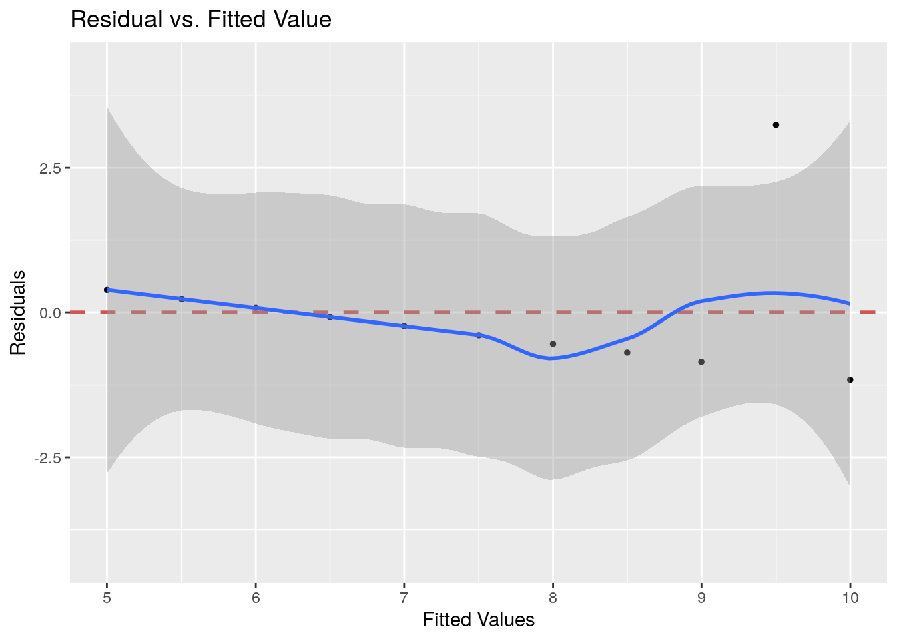
gg_resfitted(lm(Y ~ X, data = dat %>%
filter(Data_set == "Data_4"))) +
geom_smooth(method = "loess")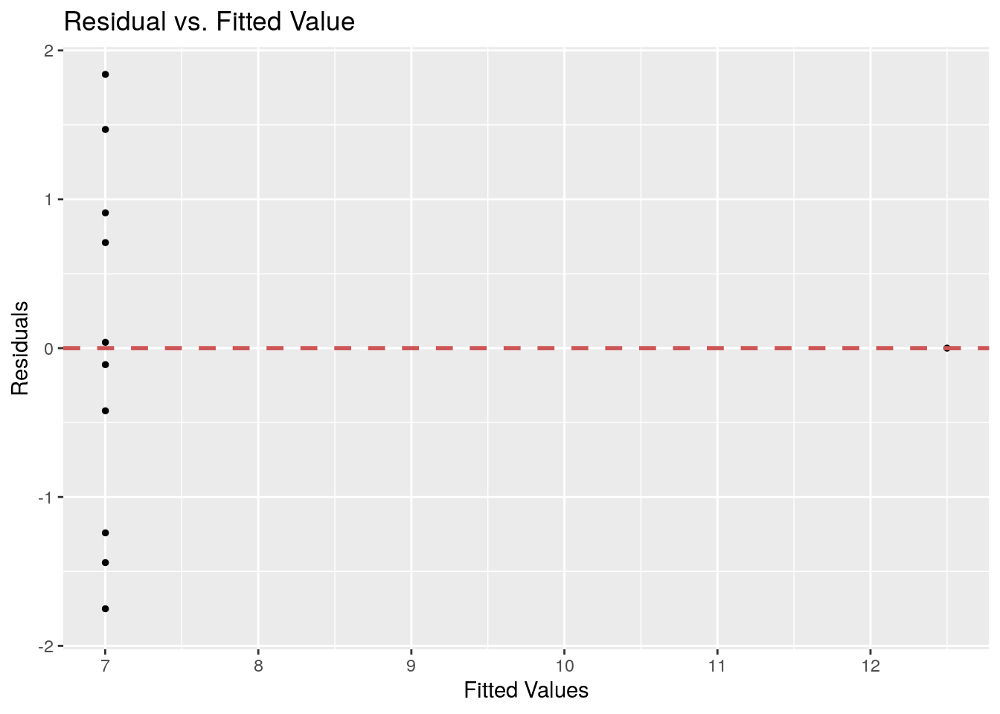
8.5.5 Q-Q Plot
We can take this further, and test whether the residuals follow a normal distribution. In particular, we can estimate the density of the residuals, and plot it against the density of a normal distribution:

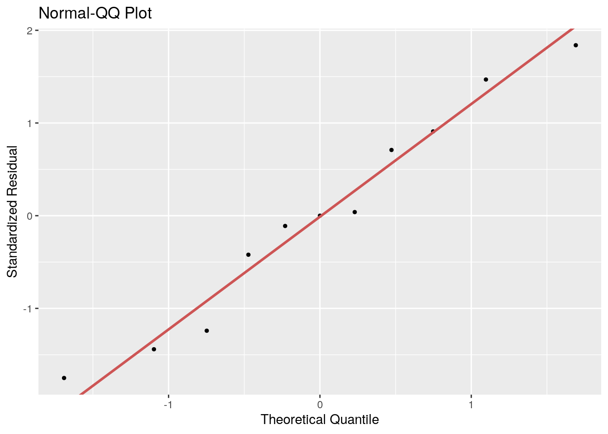
Here, you are looking for a good match to the 1:1 line; outliers will be found far from the line (e.g., case 3).
8.5.6 Cook’s distance
Another way to detect outliers is to compute the Cook’s distance for every point. Briefly, this statistic measures the effect on the regression we would obtain if we were to remove a point.


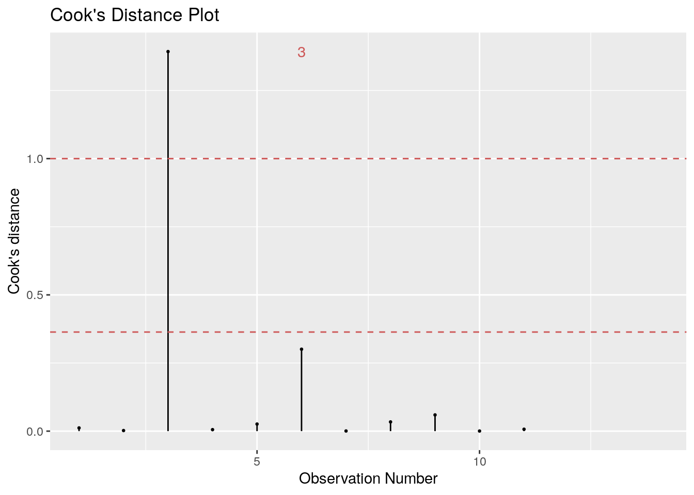
8.5.7 Leverage
Points that strongly influence the regression are said to have much “leverage”:

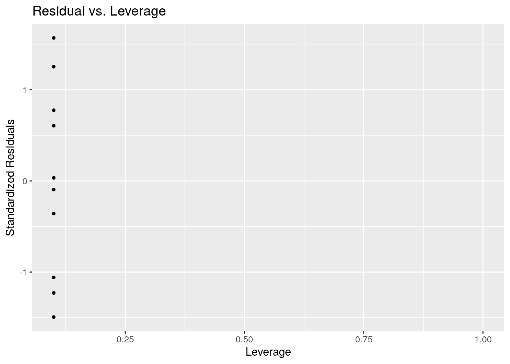
8.6 Transforming the data
Often, one needs to transform the data before running a linear regression, in order to fulfill the assumptions. We’re going to look at the salary of professors at the University of California to show how this is done.
# read the data
# Original URL
dt <- read_csv("https://raw.githubusercontent.com/dailybruin/uc-salaries/master/data/uc_salaries.csv",
col_names = c("first_name", "last_name", "title", "a", "pay", "loc", "year", "b", "c", "d")) %>%
select(first_name, last_name, title, loc, pay)
# get only profs
dt <- dt %>% filter(title %in% c("PROF-AY", "ASSOC PROF-AY", "ASST PROF-AY",
"PROF-AY-B/E/E", "PROF-HCOMP", "ASST PROF-AY-B/E/E",
"ASSOC PROF-AY-B/E/E", "ASSOC PROF-HCOMP", "ASST PROF-HCOMP"))
# remove those making less than 30k (probably there only for a period)
dt <- dt %>% filter(pay > 30000)
dt## # A tibble: 4,915 x 5
## first_name last_name title loc pay
## <chr> <chr> <chr> <chr> <dbl>
## 1 CHRISTOPHER U ABANI PROF-AY Riverside 151200
## 2 HENRY DON ISAAC ABARBANEL PROF-AY San Diego 160450.
## 3 ADAM R ABATE ASST PROF-HCOMP San Francisco 85305.
## 4 KEVORK N. ABAZAJIAN ASST PROF-AY Irvine 82400.
## 5 M. ACKBAR ABBAS PROF-AY Irvine 168700.
## 6 ABUL K ABBAS PROF-HCOMP San Francisco 286824.
## 7 LEONARD J ABBEDUTO PROF-HCOMP Davis 200385.
## 8 DON P ABBOTT PROF-AY Davis 106400.
## 9 GEOFFREY WINSTON ABBOTT PROF-HCOMP Irvine 125001.
## 10 KHALED A.S. ABDEL-GHAFFAR PROF-AY-B/E/E Davis 120100.
## # … with 4,905 more rowsThe distribution of salaries is very skewed — it looks like a log-normal distribution:

If we set consider the log of pay, we get closer to a normal:

We can try to explain the pay as a combination of title and location:
##
## Call:
## lm(formula = pay ~ title + loc, data = dt)
##
## Residuals:
## Min 1Q Median 3Q Max
## -149483 -25197 -1679 18305 213684
##
## Coefficients:
## Estimate Std. Error t value Pr(>|t|)
## (Intercept) 98397 2003 49.133 < 2e-16 ***
## titleASSOC PROF-AY-B/E/E 46898 3402 13.786 < 2e-16 ***
## titleASSOC PROF-HCOMP 25428 3955 6.430 1.40e-10 ***
## titleASST PROF-AY -15060 2370 -6.356 2.26e-10 ***
## titleASST PROF-AY-B/E/E 17405 3949 4.407 1.07e-05 ***
## titleASST PROF-HCOMP 5545 4800 1.155 0.24805
## titlePROF-AY 46095 1719 26.815 < 2e-16 ***
## titlePROF-AY-B/E/E 73586 2283 32.233 < 2e-16 ***
## titlePROF-HCOMP 115094 2356 48.855 < 2e-16 ***
## locDavis -19101 2304 -8.291 < 2e-16 ***
## locIrvine -12240 2351 -5.206 2.01e-07 ***
## locLos Angeles 7699 2082 3.697 0.00022 ***
## locMerced -20940 4484 -4.669 3.10e-06 ***
## locRiverside -18333 2893 -6.337 2.56e-10 ***
## locSan Diego -11851 2227 -5.322 1.07e-07 ***
## locSan Francisco -15808 3493 -4.525 6.17e-06 ***
## locSanta Barbara -16579 2411 -6.877 6.89e-12 ***
## locSanta Cruz -24973 2930 -8.523 < 2e-16 ***
## ---
## Signif. codes: 0 '***' 0.001 '**' 0.01 '*' 0.05 '.' 0.1 ' ' 1
##
## Residual standard error: 40970 on 4897 degrees of freedom
## Multiple R-squared: 0.5058, Adjusted R-squared: 0.504
## F-statistic: 294.8 on 17 and 4897 DF, p-value: < 2.2e-16
To note: Berkeley has been taken as the baseline location. Similarly, ASSOC-PROF AY has been taken as the baseline title.
The Q-Q plot shows that this is a terrible model! Now let’s try with the transformed data:
##
## Call:
## lm(formula = log2(pay) ~ title + loc, data = dt)
##
## Residuals:
## Min 1Q Median 3Q Max
## -2.23150 -0.22355 0.01801 0.25702 1.24529
##
## Coefficients:
## Estimate Std. Error t value Pr(>|t|)
## (Intercept) 16.52889 0.02037 811.287 < 2e-16 ***
## titleASSOC PROF-AY-B/E/E 0.52397 0.03461 15.141 < 2e-16 ***
## titleASSOC PROF-HCOMP 0.34517 0.04023 8.579 < 2e-16 ***
## titleASST PROF-AY -0.29772 0.02411 -12.351 < 2e-16 ***
## titleASST PROF-AY-B/E/E 0.18997 0.04017 4.729 2.32e-06 ***
## titleASST PROF-HCOMP 0.06826 0.04883 1.398 0.16220
## titlePROF-AY 0.56942 0.01749 32.562 < 2e-16 ***
## titlePROF-AY-B/E/E 0.81217 0.02322 34.971 < 2e-16 ***
## titlePROF-HCOMP 1.12262 0.02397 46.841 < 2e-16 ***
## locDavis -0.20826 0.02344 -8.886 < 2e-16 ***
## locIrvine -0.14533 0.02392 -6.075 1.33e-09 ***
## locLos Angeles 0.06309 0.02118 2.979 0.00291 **
## locMerced -0.24781 0.04562 -5.432 5.84e-08 ***
## locRiverside -0.22030 0.02943 -7.485 8.43e-14 ***
## locSan Diego -0.14584 0.02266 -6.437 1.33e-10 ***
## locSan Francisco -0.11260 0.03554 -3.168 0.00154 **
## locSanta Barbara -0.20706 0.02453 -8.442 < 2e-16 ***
## locSanta Cruz -0.29716 0.02981 -9.969 < 2e-16 ***
## ---
## Signif. codes: 0 '***' 0.001 '**' 0.01 '*' 0.05 '.' 0.1 ' ' 1
##
## Residual standard error: 0.4168 on 4897 degrees of freedom
## Multiple R-squared: 0.5372, Adjusted R-squared: 0.5356
## F-statistic: 334.3 on 17 and 4897 DF, p-value: < 2.2e-16
Much better! Remember to inspect your explanatory and response variables. Ideally, you want the response to be normally distributed. Sometimes one or many covariates can have a nonlinear relationship with the response variable, and you should transform them prior to analysis.